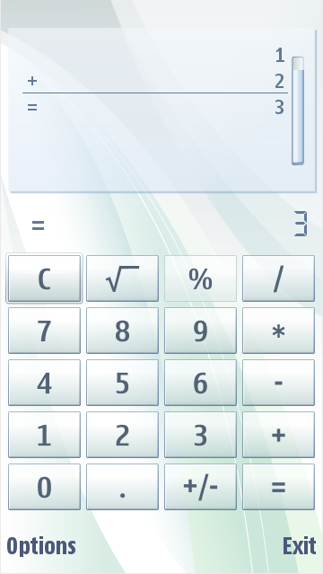
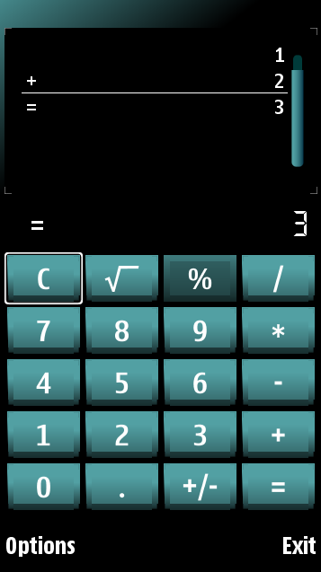

Calculator
The Calculator application has two customizable components:
- Display (input and output
display)
The
calculator display component
requires three pieces: left, center and right. The center piece is
stretched to occupy the space between the left and the right piece.
The
calculator paper component can be a
one-piece or nine-piece image. The nine-piece image component has:
- Four corner images
- Four side images
- Center images
You can design the corner images individually. The sides are stretched
to fill the size of the area. The center becomes the maximum size of
the graphics area.
The figure below illustrates a default Calculator and a customized
Calculator.
 
Figure:
Default and customized Calculator